ภาคผนวก ค · วิธีเชื่อมต่อฐานข้อมูลด้วย DBeaver
สร้าง connection ระหว่าง DBeaver กับ MySQL ของมหาวิทยาลัยสำหรับการฝึกปฏิบัติ
| รายการ | ค่า |
|---|---|
| Server Host | 202.28.34.202 |
| Port | 3306 |
| Username | s + รหัสนิสิต เช่น s66011200 |
| Password | s + รหัสนิสิต + pwd |
| Database | ชื่อฐานข้อมูลของตนเอง |
1 สร้าง connection ใหม่
เปิด DBeaver กดปุ่ม New Database Connection บนแถบเครื่องมือ เลือก MySQL แล้วกด Next
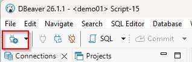
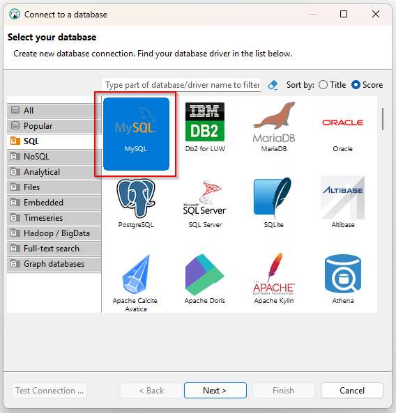
2 กรอกข้อมูลการเชื่อมต่อ
Server Host, Database, Username — และเอาเครื่องหมายถูกที่ Save password ออก (เครื่องในห้องปฏิบัติการใช้ร่วมกัน)
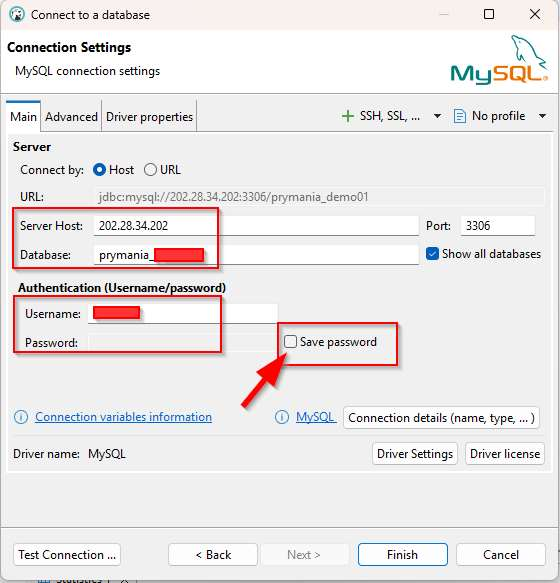
3 แก้ Driver properties
ไปที่แท็บ Driver properties แล้วแก้ค่า allowPublicKeyRetrieval เป็น true
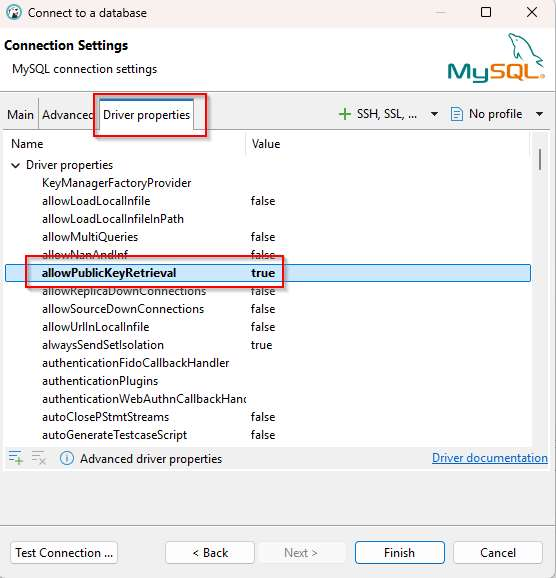
4 ตั้งชื่อ connection
กลับมาแท็บ Main คลิก Connection details (name, type, …) ตั้ง Connection name เป็นชื่อของตนเอง แล้วกด Finish
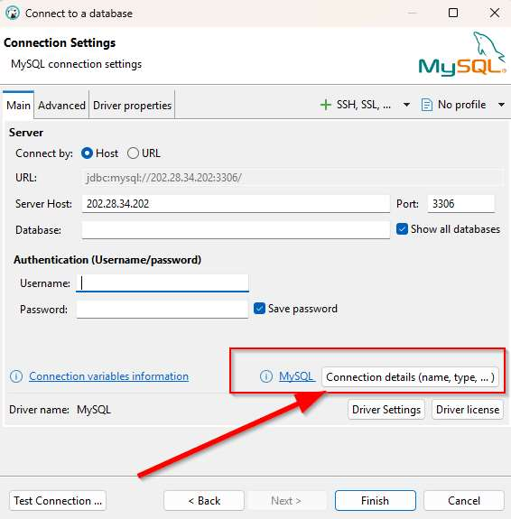
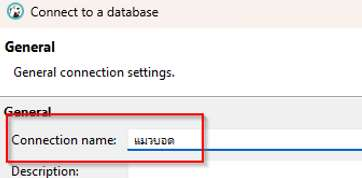
5 เข้าสู่ระบบ
คลิกที่ชื่อ connection แล้วใส่รหัสผ่านรูปแบบ s + รหัสนิสิต + pwd
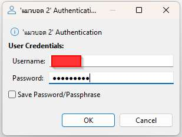
6 แก้ไข connection ภายหลัง
คลิกขวาที่ connection → Edit Connection (F4)
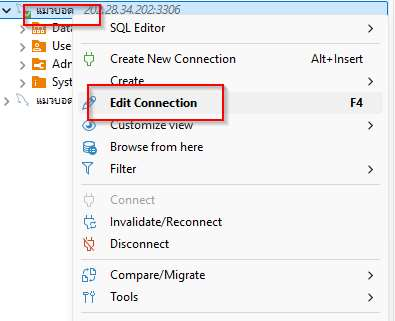
7 เปิด SQL Editor และเลือกฐานข้อมูล
เปิดไฟล์ใหม่ (ปุ่ม SQL) ตรวจว่า connection และ database ด้านบนเป็นของตนเอง — ถ้าขึ้น <N/A> ให้กดเลือกฐานข้อมูลให้ถูกต้อง มิฉะนั้นจะได้ error No database selected
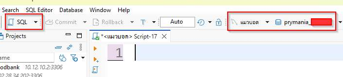
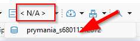
8 ทดสอบคำสั่งพื้นฐาน
รันทีละคำสั่งด้วย Ctrl+Enter หรือรันทั้งสคริปต์ด้วย Alt+X
SELECT VERSION(), DATABASE(), CURRENT_USER(); SHOW TABLES;
จากนั้นรันสคริปต์กรณีศึกษาใน ภาคผนวก ก แล้วลอง CREATE, INSERT, UPDATE, DELETE, SELECT ตามบทที่ 4–5
9 เลิกใช้งาน
เมื่อจบการฝึกปฏิบัติทุกครั้ง ต้อง Disconnect หรือ Delete connection ของตนเองเสมอ
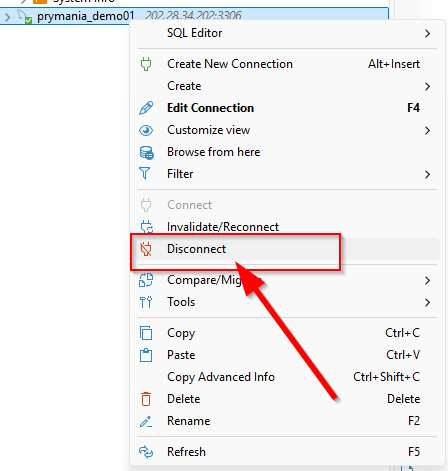
| ข้อความ | สาเหตุ / วิธีแก้ |
|---|---|
Public Key Retrieval is not allowed | ยังไม่ได้ตั้ง allowPublicKeyRetrieval = true (ขั้นที่ 3) |
Access denied for user | Username หรือ Password ผิด ตรวจรูปแบบ s + รหัส + pwd |
No database selected | ยังไม่ได้เลือกฐานข้อมูล (ขั้นที่ 7) |
Communications link failure | เครื่องติดต่อเซิร์ฟเวอร์ไม่ได้ — ตรวจเครือข่าย (อาจต้องใช้เครือข่ายของมหาวิทยาลัย) และ Host/Port |
Table '…' doesn't exist | ยังไม่ได้รันสคริปต์ภาคผนวก ก หรือพิมพ์ชื่อตารางเป็นตัวพิมพ์ใหญ่ (เซิร์ฟเวอร์ลินุกซ์แยกตัวพิมพ์) |